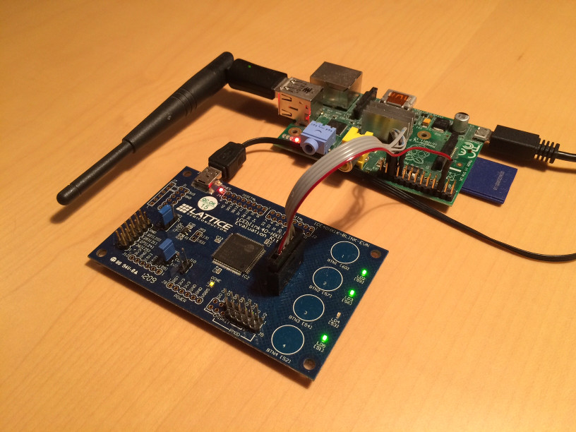

- on Sun 18 January 2015
Category: Lattice, iCE40, FPGA, Raspberry Pi, bash,
As I mentioned in previous post, I started playing around with Lattice iCE40 FPGA. In the last post I did a quick overview of the iCE40 tools. The iCEcube2 cannot compete with Xilinx ISE and Altera Quartus II, not to mention the Vivado, but since this is a low-cost FPGA the current tool offers all you need to do this kind of simple projects (I would definitely recommend the beginners to stay away from Lattice as it is not as user friendly as vendor X or vendor A, you need to have some experience to master the work flow).
Last time I found out that iCEcube2 Programmer runs only on Windows, on GNU/Linux you need to find other solutions. How the Programmer works is another interesting thing. One would expect that is uses JTAG port on FPGA to configure it, but that is not the case. The Programmer communicates with Atmel microcontroller which programs Serial NOR Flash memory. Then it reset the FPGA which boots in SPI Master mode, and it reads configuration from Flash.
A quick look at TN1248: iCE40 Programming and Configuration shows that it can be programmed also by writing from another device (e.g. microprocessor to the SPI port). This is called SPI Slave programming mode and it is enabled by holding the line CS_n low at the reset of the FPGA.

So I tried programming it using Raspberry Pi. I connected:
- grounds together
- SI on iCE40 to MOSI on RPi
- SO on iCE40 to MISO on RPi (this one is actually not needed)
- SCK on iCE40 to CLK on RPi
- pin GPIO25 on RPi to SS on iCE40 (this one is needed to enter the slave mode)
I wrote the following script and used one of the .bin files from one of the project in iCEcube2.
This is the output (well, the real output it is the configured board which blinks the LEDs while the DONE led is lit):
pi@raspberrypi ~/Jan/ice40/test1 $ sudo bash conf_FPGA.sh proto1_top_bitmap.bin
GPIO 25 not exported, trying to export...
spidev does not exist
SPI driver not loaded, try to load it...
OK: SPI driver loaded
Changing direction to out
out
Setting output to low
1
Please power cycle the iCE40 FPGA board
Press any key...
Continuing with configuration procedure
63+1 records in
63+1 records out
32300 bytes (32 kB) copied, 0.606931 s, 53.2 kB/s
Setting output to high
1
I find this type of configuration very useful when the FPGA is not the main chip in the system (when there is as in the previous example an RPi). The configuration file can be stored on Raspberry Pi SD card and at each start-up the FPGA gets programmed. The image update can be done very easily and there is no way a user can brick the FPGA (which can easily happen if the FPGA writes the configuration image and boots from its Flash, in this case two images (factory and user) are recommended).